건축기사 (2009-08-30 기출문제)
1과목: 건축계획
1. 사무소 건축의 코어에 대한 설명으로 옳지 않은 것은?
- 주내력벽 구조체로 내진벽 역할을 한다.
- 중심코어형은 바닥면적이 작은 경우에 적합하며 저층 건물에 주로 사용된다.
- 양단코어형은 2방향 피난에 이상적으며 방재상 유리하다.
- 공용부분을 한 곳에 집약시킴으로서 사무소의 유효면적을 증대시키는 역할을 한다.
(정답률: 81%)

2. 상점 건축의 진열장 배치에 관한 설명 중 옳은 것은?
- 도난을 방지하기 위하여 손님에게 감시한다는 인상을 주도록 계획한다.
- 들어오는 손님과 종업원의 시선이 정면으로 마추지도록 계획한다.
- 동선이 원활하여 다수의 손님을 주용하고 다수의 종업원으로 관리하게 한다.
- 손님쪽에서 상품이 효과적으로 보이도록 계획한다.
(정답률: 82%)
3. 백화점의 진열대 배치방법에 대한 설명 중 옳지 않은 것은?
- 직각배치는 매장면적이 최대한으로 이용된다.
- 직각배치는 판매장이 단조로워지기 쉽다.
- 사행배치는 많은 고객이 판매장 구석까지 가기 쉬운 이점이 있다.
- 자유유선배치는 매장의 변경 및 이동이 쉬우므로 계획에 있어 간단하다.
(정답률: 76%)
4. 다음 중 비잔틴 건축에 해당하는 것은?
- 성 소피아 성당
- 피사 사원
- 노트르담 성당
- 성 베드로 성당
(정답률: 62%)
5. 주당 평균 40시간을 수업하는 어느 학교에서 음악실에서의 수업이 총 20시간이며 이중 15시간은 음악시간으로 나머지 5시간은 학급토론시간으로 사용되었다면, 이 교실의 이용률과 순수율은?
- 이용률 37.5%, 순수율 75%
- 이용률 50%, 순수율 75%
- 이용률 75%, 순수율 37.5%
- 이용률 75%, 순수율 50%
(정답률: 81%)
6. 미술관 전시실의 순회형식에 관한 설명 중 옳지 않은 것은?
- 연속순로 형식은 각 전시실이 연속적으로 동선을 형성하고 있으며 비교적 소규모 전시에 적합하다.
- 갤러리(gallery) 형식은 각 실에 직접 들어갈 수가 있는 점이 유리하며, 필요시에는 자유로이 독립적으로 폐쇄할 수 있다.
- 중앙홀 형식은 중앙홀이 크면 동선의 혼란은 없으나 장래의 확장에 많은 무리를 가지고 있다.
- 중앙홀 형식은 작은 부지에서 효율적이나 많은 실을 순서별로 통하여야 하는 불편이 있다.
(정답률: 85%)
7. 학교 건축에서 단층교사에 대한 설명 중 옳지 않은 것은?
- 재해시 피난이 유리하다.
- 학습활동을 실외에 연장할 수 있다.
- 개개인의 교실에서 밖으로 직접 출입할 수 있으므로 복도가 혼잡하지 않다.
- 부지의 이용률이 높으며 설비의 배성, 배관을 집약할 수 있다.
(정답률: 77%)
8. 고대 그리이스에서 사용되던 오더(order)로 가장 단순하고 장중한 느낌을 주며, 다른 오더와 달리 주초가 없는 것은?
- 도릭 오더(Doric order)
- 이노닉 오더(Ionic order)
- 코리티안 오더(Corinthian order)
- 터스칸 오더(Tusca order)
(정답률: 76%)
9. 병원의 간호사 대기소에 관한 설명 중 옳지 않은 것은?
- 계단이나 엘리베이터홀 등에 가능한 한 인접시켜 외부인의 출입을 감시할 수 있도록 한다.
- 병신군의 한쪽 끝에 위치시켜 복도의 상황을 쉽게 알 수 있도록 한다.
- 1개의 간호사 대기소에서 관리할 수 있는 병상수는 30~40개 이하로 한다.
- 간호사 대기소에서 병실군까지 보행하는 거리를 24m이내가 되도록 한다.
(정답률: 75%)
10. 그리이스의 아고라(Agora)와 유사한 기능을 갖는 로마시대의 건축물은?
- 도무스(Domus)
- 인슐라(Imsuia)
- 포럼(Forum)
- 판테온(Pantheon)
(정답률: 71%)
11. 다음 중 초고층 아파트 계획시 특히 유의할 사항과 가장 거리가 먼 것은?
- 바람의 영향
- 피난계획
- 구조적인 안전성
- 자연채광
(정답률: 78%)
12. 도서관 출납 시스템(system)에 대한 설명 중 옳지 않은 것은?
- 자유개가식은 대출수속이 간편하며 책 내용 파악 및 선택이 자유롭다.
- 자유개가식은 서가의 정리가 잘 안되면 혼란스럽게 된다.
- 폐가식은 규모가 큰 도서관의 독립된 서고의 경우에 채용한다.
- 폐가식은 서가나 열람실에서 감시가 필요하나 대출절차가 간단하여 관원의 작업량이 적다.
(정답률: 84%)
13. 다음의 극장에 관한 용어의 설명 중 옳지 않은 것은?
- 그린 룸(green room) - 배경제작실로 위치는 무대에 가까울수록 편리하다.
- 앤티 룸(anti room) - 출연자들이 출연 바로 직전에 대기하는 공간이다.
- 플라이 갤러리(fly gallery) - 무대 주위의 벽에 6~9m 높이로 설치되는 좁은 통로이다.
- 프롬프터 박스(prompter box) - 객석쪽에서 보이지 않게 설치된 대사를 불러 주는 곳이다.
(정답률: 66%)
14. 주택 단지 내 도로의 형태 중 쿨데삭(cul-de-sac)형에 대한 설명으로 옳지 않은 것은?
- 보차분리가 이루어진다.
- 보행로의 배치가 자유롭다.
- 주거환경의 쾌적성 및 안전성 확보가 용이하다.
- 대규모 주택 단지에 주로 사용되며, 최대 길이는 1km이하로 한다.
(정답률: 77%)
15. 미술관의 전시장 계획에 관한 설명 중 옳은 것은?
- 조명의 광원은 감추고 눈부심이 생기지 않는 방법으로 투사하는 것이 좋다.
- 인공조명을 주로 하고 자연채광은 고려하지 않는다.
- 광원의 위치는 수직벽면에 대해 10~25°의 범의 내에서 상향조정이 좋다.
- 회화를 감상하는 시점의 위치는 화면 대각선의 3배 거리가 가장 이상적이다.
(정답률: 54%)
16. 다음 호텔에 대한 설명 중 옳지 않은 것은?
- 아파트먼트 호텔은 장기간 체제하는데 적합한 호텔로서 각 객실에는 주방설비를 갖추고 있다.
- 커머셜 호텔은 스포츠 시설을 위주로 이용되는 숙박시설을 갖추고 있다.
- 터미널 호텔은 교통기관의 발착지점에 위치한다.
- 리조트 호텔은 조망 및 주변경과의 조건이 좋은 곳에 위치하는 것이 좋다.
(정답률: 81%)
17. 숑바르 드 로브의 주거면적기준으로 옳은 것은?
- 병리기준: 6m2, 한계기준: 12m2
- 병리기준: 8m2, 한계기준: 14m2
- 병리기준: 6m2, 한계기준: 14m2
- 병리기준: 8m2, 한계기준: 12m2
(정답률: 80%)
18. 극장의 객석 계획에 관한 설명 중 옳지 않은 것은?
- 연극 등을 감상하는 경우 연기자의 표정을 읽을 수 있는 가시한계는 15m 정도이다.
- 객석의 세로통로는 무대를 중심으로 하는 방사선상이 좋다.
- 좌석을 엇갈리게 배열(stagger seats)하는 방법은 객석의 바닥구배가 완만한 경우에는 사용할 수 없으며 통로 폭이 좁아지는 단점이 있다.
- 객석은 무대의 중심 또는 스크린의 중심을 중심으로 하는 원호의 배열이 이상적이다.
(정답률: 78%)
19. 한국 전통건축에 관한 설명 중 옳지 않은 것은?
- 공포는 시각적으로 무거운 지붕의 압박감을 덜어주는 역할을 한다.
- 평방은 외부기둥의 기둥머리를 연결하는 부재로 주심포 양식의 건물에 주로 사용되었다.
- 주심포 양식의 건축물로는 봉정사 극락전, 부석사 무량수전 등이 있다.
- 익공 양식은 궁궐의 정전이나 사찰의 대웅전 등에 사용 되었다.
(정답률: 59%)
20. 다음의 사무소 건축에 관한 설명 중 옳지 않은 것은?
- 유효율이란 연면적에 대한 대실면적의 비율을 말한다.
- 엘리베이터는 분산 배치하는 것이 수직교통을 원활하게 한다.
- 실단위 계획에서 개실형식은 프라이버시가 좋고 주위 환경조절이 용이하다.
- 실단위 계획에서 오픈플랜형식은 통로가 최소화되어 공간 낭비가 적다.
(정답률: 73%)
2과목: 건축시공
21. 프리스트레스트 콘크리트 공사에서 강재의 부식저항성과 관련하여 PSC그라우트 중에 포함되는 염화물량은 얼마 이하를 원칙으로 하는가?
- 0.3kg/m3
- 0.4kg/m3
- 0.5kg/m3
- 0.6kg/m3
(정답률: 64%)
22. 벽돌조 건물에서 벽량이란 해당층의 바닥면적에 대한 무엇의 비를 말하는가?
- 벽면적의 총 합계
- 높이
- 벽두께
- 내력벽길이의 총합계
(정답률: 60%)
23. 흙막이를 설치한 후, 높이 7m의 터파기 여유폭은?
- 10~30cm
- 30~50cm
- 60~90cm
- 90~120cm
(정답률: 45%)
24. 벽돌쌓기에 대한 설명 중 옳지 않은 것은?
- 벽돌쌓기 하루 높이는 최대 1.5m 이내로 한다.
- 벽돌쌓기의 세로줄눈은 보통 막힌 줄눈으로 쌓는다.
- 모르타르는 벽돌강도와 동등 이상의 것을 사용한다.
- 내화벽돌은 충분하게 물축임하여 표면의 물기가 빠진 뒤 쌓는다.
(정답률: 43%)
25. 레디믹스트 콘크리트의 슬럼프값이 80mm 이상일 때 슬럼프 허용오차 기준으로 옳은 것은?
- ± 10 mm
- ± 15 mm
- ± 25 mm
- ± 30 mm
(정답률: 42%)
26. 프리스트레스트 콘크리트(prestressed concrete)에 대한 설명 중 옳지 않은 것은?
- 포스트텐션(post-tension)법은 콘크리트의 강도가 발현된 후에 프리스트레스를 도입하는 현장형 공법이다.
- 구조물의 자중을 경감할 수 있으며, 부재단면을 줄일 수 있다.
- 화재에 강하며, 내화피복이 불필요하다.
- 고강도이면서 수축 또는 크리프 등의 변형이 적은 균일한 고품질의 콘크리트가 요구된다.
(정답률: 71%)
27. 다음 중 언더피닝(Under pinning)공법의 종류가 아닌 것은?
- 갱ㆍ피어공법
- 잭파일(jacked pile)공법
- 그라우트주입공법
- 콘크리트 VH 타설법
(정답률: 62%)
28. 토량 470m3를 불도져를 작업하려고 한다. 작업을 완료하기까지의 소요시간을 구하면? (단, 불도져의 삽날용량은 1.2m3, 토량환산 계수는 0.8, 작업효율은 0.8, 1최 싸이클 시간은 12분이다.)
- 120.40시간
- 122.40시간
- 132.40시간
- 140.40시간
(정답률: 59%)
29. 토질시험 중 보링의 구멍을 이용하여 +자 날개형의 테스터를 지반에 때려박고 회전시켜 그 회전력에 의하여 진흙의 점착력을 판별하는 시험방법은?
- 표준관입시험
- 베인시험
- 3축압축시험
- 컴포지트 샘플링
(정답률: 75%)
30. 이형철근이라도 단부에 반드시 갈고리(hoook)를 설치하지 않아도 되는 경우는?
- 스터럽
- 띠철근
- 굴뚝의 철근
- 지중보의 돌출부분의 철근
(정답률: 67%)
31. 건설공사현장에서 보통 콘크리트를 KS규격품임 레미콘으로 주문할 때의 요구항목이 아닌 것은?
- 잔골재의 조립율
- 굵은 골재의 최대 치수
- 압축 강도
- 슬럼프
(정답률: 72%)
32. 칠공사에서 철제계단(양면칠)의 소요면적계산식으로 옳은 것은?
- 경사면적 × 1배
- 경사면적 × 1.5배
- 경사면적 × (2~2.5배)
- 경사면적 × (3~5배)
(정답률: 69%)
33. 공사금액의 결정방법에 따른 도급방식이 아닌 것은?
- 정액도급
- 공종별도급
- 단가도급
- 실비청산 보수가산도급
(정답률: 61%)
34. 유동화콘크리트의 용어 중에서 베이스 콘크리트에 대한 설명으로 옳은 것은?
- 유동화콘크리트 제조시 유동화제를 첨가하기 전 기본 배합의 콘크리트
- 유동화콘크리트를 제조하기 위하여 혼합된 유동화제를 첨가한 후위 콘크리트
- 기초 콘크리트에 타설하기 위해 현장에 반입된 레디믹스트 콘크리트
- 지하층에 콘크리트를 타설하기 위하여 현장에 반입된 레드믹스트 콘크리트
(정답률: 76%)
35. 대규모 공사에서 지역별로 공사를 분리하여 잘주하며 중소업자에게 균등한 기회를 주는 발주방식은?
- 전문공종별 분할도급
- 공정별 분할도급
- 공구별 분할도급
- 직종별, 공종별 분할도급
(정답률: 55%)
36. 공기의 유통이 좋지 않은 지하실과 같이 밀폐된 방에 사용하는 미장마무리 재료 중 가장 부적절한 것은?
- 돌로마이트 플라스터
- 혼합 석고 플라스터
- 시멘트 모르타르
- 경석고 플라스터
(정답률: 76%)
37. 경량콘크리트공사에서 경량골재의 취급 및 저장에 관한 내용 중 옳지 않은 것은?
- 골재의 짐부리기, 쌓아 올리기 및 물뿌리기를 할때 입자가 분리되도록 한다.
- 골재를 쌓아둘 곳은 될 수 있는 대로 물빠짐이 좋게 한다.
- 골재를 쌓아둘 곳은 햇볕을 덜 받는 장소를 택한다.
- 골재에 때때로 물을 뿌리고 표면에 포장 등을 하여 항상 같은 습윤상태를 유지한다.
(정답률: 57%)
38. 목조 지붕들 구조에 있어서 중도리와 ㅅ자보를 연결하는데 가장 적합한 철물은?
- 띠쇠
- 감잡이쇠
- 주걱볼트
- 엇꺽쇠
(정답률: 66%)
39. 플라이애시(fly ash)를 사용한 콘크리트에 대한 설명 중 옳지 않은 것은?
- 수밀성이 향상된다.
- 경화작용이 늦어지므로 장기강도가 감소한다.
- 해수 등에 대한 화학적 저항이 크다.
- 워커빌리티가 좋아지고 블리딩현상은 감소한다.
(정답률: 74%)
40. 다음 보기는 콘크리트 구조물의 동해에 의한 피해현상을 나타낸 것이다. 어느 현상을 설명한 것인가?
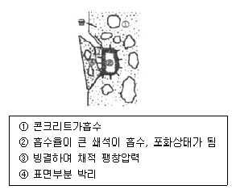
- 레이턴스
- Pop out
- 폭열현상
- 알칼리골재반응
(정답률: 77%)
3과목: 건축구조
41. 플랫 슬래브가 큰 하중을 받을 때 기둥 주변에서 뚫림전단(punching shear)파괴의 위험이 발생한다. 뚫림 전단을 검토하는 위치는? (단, d는 슬래브의 유효두께임)
- 기둥면 주변
- 기둥면에서 d/2 만큼 떨어진 주변
- 기둥면에서 d/4 만큼 떨어진 주변
- 기둥면에서 d만큼 떨어진 주변
(정답률: 67%)
42. 상단과 하단이 고정된 길이 6m, 단면적 1cm2인 강봉의 상단으로부터 2m 지점에 45kN의 하향 축력이 작용할 때 하중 작용점의 변위는? (Es=200,000MPa)(오류 신고가 접수된 문제입니다. 반드시 정답과 해설을 확인하시기 바랍니다.)
- 3.0mm
- 3.5mm
- 4.0mm
- 4.5mm
(정답률: 28%)
43. 철골기중의 좌굴하중(critical buckling load)에 영향을 주지 않는 것은?
- 재료의 항복강도
- 재료의 탄성계수
- 단면2차모멘트
- 유효좌굴길이
(정답률: 52%)
44. 강도설계법에서 흙에 접하거나 옥외의 공기에 직접 노출되는 현장 치기 콘크리트인 경우 D16 이하 철근의 최소피복두께는 얼마로 하는가?
- 20mm
- 30mm
- 40mm
- 50mm
(정답률: 60%)
45. 기초 설계시 인접대지와의 관계로 편심기초를 만들고자 한다. 이때 편심기초의 지반력이 균등하도록 하기 위하여 어떤 방법을 이용함이 가장 타당한가?
- 지중보를 설치한다.
- 기초 면적을 넓힌다.
- 기둥의 단면적을 크게 한다.
- 기초 두께를 두껍게 한다.
(정답률: 72%)
46. 정방향 단면을 표시한 다음 그림의 X축에 대한 단면계수의 비로 옳은 것은?
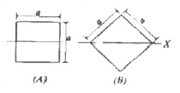
- A : B = 1 : √2
- A : B = √2 : 1
- A : B = 1 : 2√2
- A : B = 2√2 : 1
(정답률: 34%)
47. 그림과 같은 구조물에서 T부재가 받는 힘의 크기는?
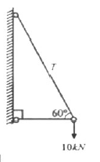
- 9.5 kN
- 10.5 kN
- 11.5 kN
- 12.5 kN
(정답률: 55%)
48. 다음 철골조 주각 부분의 그림에서 A의 명칭은?
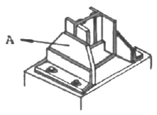
- base plate
- side angle
- anchor plate
- wing plate
(정답률: 70%)
49. 철골구조에서 축부지름이 24mm인 고력볼트의 구멍직경으로 적절한 것은?(오류 신고가 접수된 문제입니다. 반드시 정답과 해설을 확인하시기 바랍니다.)
- 26mm
- 27mm
- 28mm
- 30mm
(정답률: 59%)
50. 양단 힌지인 길이 6m인 H-300×300×10×15의 기둥이 약축방향으로 부재중앙이 가새로 지지되어 있을 때 설계용 세장비는? (단, 이부재의 단면 2차 반경 rx=13.1cm, ry=7.51cm 이다.)
- 40.0
- 45.8
- 58.2
- 66.3
(정답률: 60%)
51. 그림과 같은 앵글(angle)의 유효 단면적으로 옳은 것은? (단, LS-50×50×6 사용, a=5.644cm2, d=1.7cm)
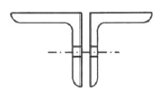
- 8.0cm2
- 8.5cm2
- 9.0cm2
- 9.25cm2
(정답률: 50%)
52. 그림과 같은 단면의 x0, Y0 축으로부터 도심까지의 거리 (X0, Y0)는? (단, 단위는 cm임)
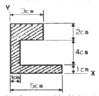
- (1.32, 3.14)
- (2.04, 4.26)
- (1.25, 2.87)
- (1.57, 3.37)
(정답률: 57%)
53. 그림과 같은 구조물의 부정정 차수는?
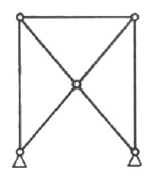
- 1차
- 2차
- 3차
- 4차
(정답률: 59%)
54. 그림과 같은 재료의 푸아송비는? (단, 점선은 변형된 상태이다.)
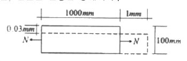
- 1
- 0.5
- 0.3
- 0.1
(정답률: 65%)
55. 모살용접에서 접합부의 두꺼운 쪽 소재 두께가 10mm일 경우 모살용접의 최소 사이즈는 얼마인가?
- 3mm
- 4mm
- 5mm
- 6mm
(정답률: 62%)
56. 강구조 인잔 부재의 설계인장강도는 KBC20⑤ 한계상태설계법에 의해 구하면? (단, 인장 부재의 총단면적 A=3000mm2이고 유효 순단면적 A=27000mm2이며 이때 사용 형강의 f=240N/mm2, F=400mm2임)
- 648 kN
- 720 kN
- 810 kN
- 1080 kN
(정답률: 21%)
57. 다음 구조물 중 내진설계상 도시계획구역에서의 중요도계수가 가장 큰 구조물은?
- 10층 규모의 숙박시설
- 5층 규모의 오피스텔
- 연면적이 5000m2 인 공연장
- 연면적이 1500m2인 병원
(정답률: 35%)
58. 절점 B에 외력 M=200kNㆍm가 작용하고 각 부재의 강비가 그림과 같은 경우 MAB는?
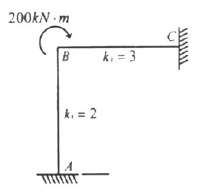
- 20kNㆍm
- 40kNㆍm
- 60kNㆍm
- 80kNㆍm
(정답률: 66%)
59. 다음 중 철골조의 소성설계와 관계없는 항목은?
- 소성힌지
- 안전율
- 붕괴기구
- 하중계수
(정답률: 60%)
60. 그림과 같은 정정라멘에서 BD부재의 축방향력으로 옳은 것은?(오류 신고가 접수된 문제입니다. 반드시 정답과 해설을 확인하시기 바랍니다.)
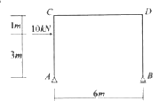
- 5kN
- -5kN
- 10kN
- -10kN
(정답률: 57%)
4과목: 건축설비
61. 다음 중 전시샤프트(ES)의 계획시 고려사항으로 옳지 않은 것은?
- 각 층마다 같은 위치에 설치한다.
- 기기의 배치와 유지보수에 충분한 공간으로 하고, 건축적인 마감을 실시한다.
- 점검구는 유지 보수시 기기의 반출입이 가능하도록 하여야 하며, 폭은 최소 300[mm]이상으로 한다.
- 공급대상 범위의 배선거리, 전압강하 등을 고려하여 전력부하설비 시설위치의 중앙에 위치하도록 한다.
(정답률: 55%)
62. 고가수조 급수방식에서 물 공급 순서로서 알맞은 것은?
- 상수도→저수조→펌프→고가수조→위생기구
- 상수도→고가수조→펌프→저수조→위생기구
- 상수도→고가수조→저수조→펌프→위생기구
- 상수도→저수조→고가수조→펌프→위생기구
(정답률: 70%)
63. 다음과 같은 특징을 갖는 공기조화방식은?
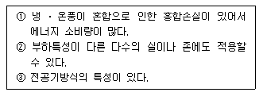
- 유인 유니트방식
- 팬코일 유니트방식
- 단일 덕트방식
- 이중 덕트방식
(정답률: 64%)
64. 덕트의 분기부에 설치하여 풍량조절용으로 사용되는 댐퍼는?
- 버터플라이 댐퍼
- 평행익형 댐퍼
- 대향익형 댐퍼
- 스플릿 댐퍼
(정답률: 75%)
65. 간선의 배선 방식 중 평행식에 설명으로 옳은 것은?
- 설비비가 가장 저렴하다.
- 배선자재의 소요가 가장 적다.
- 사고의 영향을 최소화할 수 있다.
- 전압이 안정되나 부하의 증가에 적응할 수 없다.
(정답률: 73%)
66. 개방식 스프링클러 배관방식을 적용하기 어려운 장소는?
- 천장이 높은 무대부
- 공장
- 물류창고
- 도서관
(정답률: 62%)
67. 간접조명방식에 관한 설명 중 옳지 않은 것은?
- 직사 눈부심이 없다.
- 작업면에 고조도를 얻을 수 있으나 휘도차가 크다.
- 거의 대부분의 발산광속을 윗방향으로 확산시키는 방식이다.
- 천장, 벽면 등이 밝은 색이 되어야 하고, 빛이 잘 확산 되도록 하여야 한다.
(정답률: 63%)
68. 다음과 같은 공식을 통해 산출되는 값으로 전기설비가 어느 정도 유효하게 사용되는가를 나타내는 것은?
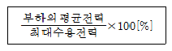
- 부하율
- 보상률
- 부등률
- 수용률
(정답률: 76%)
69. 다음의 덕트 설비에 관한 설명 중 옳은 것은?
- 고속덕트는 관마찰저항을 줄이기 위하여 일반적으로 장방향 덕트를 사용한다.
- 고속덕트에는 소음상자를 사용하지 않는 것이 원칙이다.
- 같은 양의 공기가 덕트를 통해 송풍될 때 풍속을 높게 하면 덕트의 단면치수를 작게 할 수 있다.
- 등마찰손실법은 덕트 내의 풍속을 일정하게 유지할 수 있도록 덕트 치수를 결정하는 방법이다.
(정답률: 56%)
70. 다음의 통기관의 관경에 대한 설명 중 옳지 않은 것은?
- 신정통기관의 관경은 배수수직관의 관경보다 크게 해서는 안된다.
- 루프통기관의 관경은 배수수평지관과 통기수직관중 작은 쪽 관경의 1/2이상으로 한다.
- 각개통기관이 관경은 그것이 접속되는 배수관 관경의 1/2이상으로 한다.
- 결합통기관의 관경은 통기수직관과 배수수직관중 작은 쪽 관경 이상으로 한다.
(정답률: 33%)
71. 냉방부하가 42,000 kJ/h인 어느 실에 16℃의 공기를 공급하여 냉방을 하고자 할 때 필요한 송풍량은? (단, 실내온도는 26℃이며, 공기의 비열은 1.2kJ/m3ㆍK이다.)
- 3,200 m3/h
- 3,500m3/h
- 4,000m3/h
- 4,200m3/h
(정답률: 59%)
72. 가스배관 경로 선정시 주의하여야 할 사항으로 옳지 않은 것은?
- 옥내배관은 매립하여 견고하게 한다.
- 장래의 증설 및 이설 등을 고려한다.
- 손상이나 부식 및 전식을 받지 않도록 한다.
- 주요구조부를 관통하지 않도록 한다.
(정답률: 79%)
73. 실의 크기가 9m×7m×3m인 교실에서, 환기를 시간당 1회행할 때 환기로 인한 손실열량(현열량)은? (단, 공기의 비열 1.2kJ/m3ㆍK, 실내온도는 20℃ 외기온도는 -5℃ 이다.)
- 3450 kJ/h
- 4600 kJ/h
- 5670 kJ/h
- 11900 kJ/h
(정답률: 50%)
74. 에스컬레이터의 좌우에 설치되어 있으며, 스텝을 조행시키는 역할을 하는 것은?
- 스텝체인
- 스커트가드
- 핸드레일
- 가이드레일
(정답률: 70%)
75. 다음과 같은 벽체의 열관류율은?
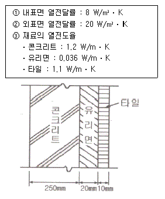
- 약 0.90 W/m2ㆍK
- 약 1.⑤ W/m2ㆍK
- 약 1.20 W/m2ㆍK
- 약 1.35 W/m2ㆍK
(정답률: 61%)
76. 간선 설계시 전선의 굵기를 결정하는 요소와 가장 관계가 먼 것은?
- 전선의 허용 전류
- 전선의 허용 전압 강하
- 전성의 기계적인 강도
- 전선관의 굵기
(정답률: 59%)
77. 다음 설명에 알맞은 엘리베이터 조작 방식은?
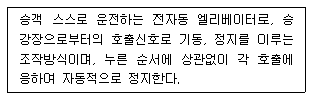
- 카 스위치 방식
- 시그널 컨트롤 방식
- 승합전자동식
- 단식자동방식
(정답률: 71%)
78. 집을 오랫동안 비워두어서 트랩의 봉수가 파괴되었다. 그 원인으로 가장 가능성이 있는 것은?
- 증발
- 자기사이펀 작용
- 캐비테이션 현상
- 역압에 의한 작용
(정답률: 59%)
79. 다음의 옥내소화전설비의 펌프를 이용한 가압송수장치에 대한 설명 중 ( )안에 들어갈 내용으로 옳게 연결된 것은?
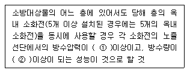
- ①0.17MPa, ②130ℓ/min
- ①0.34MPa, ②250ℓ/min
- ①0.17MPa, ②250ℓ/min
- ①0.34MPa, ②130ℓ/min
(정답률: 65%)
80. 다음의 증기난방에 대한 설명 중 옳지 않은 것은?
- 응축수 환수관 내에 부식이 발생하기 쉽다.
- 온수난방에 비해 방열기 크기나 배관의 크기가 작아도 된다.
- 방열기를 바닥에 설치하므로 복사난방에 비해 실내바닥의 유효면적이 줄어든다.
- 온수난방에 비해 예열시간이 길어서 충분한 난방감을 느끼는데 시간이 걸린다.
(정답률: 66%)
5과목: 건축법규
81. 다음은 대지에 조경 등의 조치를 하여야 하는 건축물은?
- 자연녹지지역에 건축하는 건축물
- 면적이 5,000m인 대지에 건축하는 공장
- 연면적의 합계기 1,000m2인 공장
- 축사
(정답률: 54%)
82. 다음 중 국토해양부령으로 정하는 구조기준 등에 따라 그 구조의 안전을 확인하여야 하는 대상건축물에 속하지 않는 것은?
- 층수가 3층인 건축물
- 처마높이가 9m인 건축물
- 높이가 12m인 건축물
- 기둥과 기둥사이의 거리가 10m인 건축물
(정답률: 55%)
83. 개별관람석의 바닥면적이 800m인 공연장의 관람석으로부터의 출구를 다음과 같이 설치하였을 때 옳지 않은 것은?
- 각 출구의 유효너비를 1.6m로 하였다.
- 각 출구의 유효너비의 합계를 4.5m로 하였다.
- 관람석별의 2개소 이상 설치하였다.
- 출구는 모두 바깥여닫이로 하였다.
(정답률: 60%)
84. 다음의 중앙도시계획위원회에 관한 설명 중 옳지 않은 것은?
- 위원장 부위원장 각 1명을 포함한 15명 이상 50명 이내의 위원으로 구성한다.
- 공무원이 아닌 위원의 수는 10명 이상으로 하고, 그 임기는 2년으로 한다.
- 회의는 재적위원 과반수의 출석을 개의하고, 출석위원 과반수의 찬성으로 의결한다.
- 위원장 및 부위원장은 위원 중에서 국토해양부장관이 임명하거나 위촉한다.
(정답률: 51%)
85. 다음 중 건축물의 건축주가 건축물의 건축허가를 신청하는 경우 에너지 절약계획서를 제출하여야 하는 대상 건축물에 속하지 않는 것은?
- 50세대 이상인 공동주택(기숙사제외)
- 운동시설 중 실내수영장으로서 당해 용도에 사용되는 바닥면적의 합계가 500m2인 건축물
- 의료시설 중 병원으로서 당해 용도에 사용되는 바닥면적의 합계가 1,500m2인 건축물
- 교육연구시설 중 연구소로서 당해 용도에 사용되는 바닥면적의 합계가 3,000m2인 건축물
(정답률: 41%)
86. 건축물의 연면적 중 주차장으로 사용되는 비율이 70퍼센트인 경우, 주차전용건축물로 볼 수 있는 주차장외의 용도에 해당하지 않는 것은?
- 제1종 근린생활시설
- 제2종 근린생활시설
- 의료시설
- 운동시설
(정답률: 60%)
87. 다음은 비상용승강기의 승강장의의 구조에 관한 기준내용이다. ( )안에 알맞은 것은?
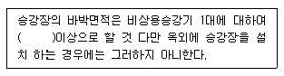
- 3제곱미터
- 6제곱미터
- 9제곱미터
- 12제곱미터
(정답률: 75%)
88. 용도지역의 세분에 있어서 중고층주택을 중심으로 편리한 주거환경을 조성하기 위하여 필요한 지역은?
- 제1종일반주거지역
- 제2종일반주거지역
- 제3종일반주거지역
- 준주거지역
(정답률: 51%)
89. 국토해양부장관, 시 도지사, 시장 또는 군수는 도시관리계획을 입안하려면, 특정 기반시성의 설치 정비 또는 개량에 관한 도시관리계획의 결정시 해당 지반의회의 의견을 들어야 한다. 다음 중 특정 기반시설에 해당되지 않는 것은?
- 학교 중 대학
- 운동장
- 자동차정류장 중 화물터미널
- 철도 중 도시철도
(정답률: 36%)
90. 건축물의 바닥면적 산정에 대한 설명 중 옳지 않은 것은?
- 벽 기둥의 구획이 없는 건축물은 그 지붕 끝부분으로 부터의 수평투영면적으로 한다.
- 공동주택으로서 지상층에 설치한 어린이놀이터의 면적은 바닥면적에 산입하지 아니한다.
- 필로티는 그 부분이 공중의 통행이나 차량의 통행 또는 주차에 전용되는 경우에는 바닥면적에 산입하지 아니한다.
- 층고가 1.5m인 계단탑은 바닥면적에 산입하지 아니한다.
(정답률: 40%)
91. 지하식 또는 건축물식 노외주차장의 자로의 구조에 관한 기주 내용으로 옳지 않은 것은?
- 높이는 주차바닥면으로부터 2.3미터 이상으로 하여야 한다.
- 경사로의 종단경사도는 직선부분에서는 15퍼센트를 곡선부분에서는 12퍼센트를 초과하여야서는 아니된다
- 주차대수규모가 50대 이상인 경우의 경사로는 너비 6미터 이상인 2차선의 차로를 확보하거나 진입차로와 진출차로를 분리하여야 한다,
- 굴곡부는 자동차가 6미터(같은 경사로를 이용하는 주차장의 총주차대수가 50대 이하인 경우에는 5미터)이상의 내변반경으로 회전이 가능하도록 하여야 한다.
(정답률: 64%)
92. 특별시장 광역시장 시장 군수 또는 구청장이 설치하는 노외주차장의 주차대수 규모가 500대일 경우, 설치하여야 하는 장애인전용주차구획의 최소 규모는?
- 50면
- 25면
- 20면
- 10면
(정답률: 51%)
93. 다음 중 특별시나 광역시에 건출할 경우, 특별시장이나 광역시장의 허가를 받아야 하는 대상 건축물은?
- 20층의 호텔
- 25층의 사무소
- 연면적 90.000m2 공동주택
- 연면적 150.000m2 공장
(정답률: 61%)
94. 건축물과 해당 건축물의 용도의 연결이 옳지 않은 것은?
- 주유소 - 자동차관련시설
- 야외음악당 - 관광휴게시설
- 촬영소 - 방송통신시설
- 일반음식점 - 제2종 근린생활시설
(정답률: 63%)
95. 다음 중 방화구획의 설치기준 내용으로 옳지 않은 것은?
- 10층 이하의 층은 바닥면적 1,000m2이내마다 구획할 것
- 11 이하의 층은 바닥면적 500m2이내마다 구획할 것
- 3층 이상의 층과 지하층은 층마다 구획할 것
- 10층 이하의 층은 스프링클러 기타 이와 유사한 자동식 소화설비를 설치한 경우에는 바닥면적 3,000m2, 이내마다 구획할 것
(정답률: 47%)
96. 다음 중 노외주차장의 출구 및 입구를 설치할 수 있는 장소는?
- 초등학교의 출입구로부터 18m 떨어진 도로의 부분
- 종단구배가 12%인 도로
- 육교에서 4m 떨어진 도로의 부분
- 너비 4m의 도로(주차대수 100대인 경우)
(정답률: 35%)
97. 다음의 가설건축물과 관련된 기준 내용 중 밑줄 친 대통령령으로 정하는 용도의 가설건축물에 해당하지 않는 것은?
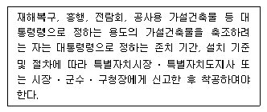
- 연면적이 50m인 간이 축사용 비닐하우스
- 조립식 경량구조로 된 외벽이 없는 임시 자동차 차고
- 전시를 위한 견본 주택
- 공사에 필요한 규모의 공사용 가설건축물
(정답률: 64%)
98. 태양열을 주된 에너지원으로 이용하는 주택의 건축면적 산정시 기준이 되는 것은?
- 건축물의 외벽 중 내측 내력벽의 중심선
- 건축물의 외벽 중 외측 내력벽의 중심선
- 건축물 외벽이 외곽선
- 전체 외벽두께의 중심선
(정답률: 75%)
99. 거실의 채광 기준 적용 대상이 아닌 것은?
- 단독주택의 거실
- 사무소의 설계ㆍ제도실
- 숙박시설의 객실
- 교육연구시설 중 학교의 교실
(정답률: 69%)
100. 특별피난계단 및 비상용승강기의 승강장에 설치하는 설비에 관한 기준 내용으로 옳지 않은 것은?
- 배연구는 평상시에 열린 상태를 유지하고, 닫힌 경우에는 배연에 의한 기류로 인하여 열리지 아니하도록 할 것
- 배연구가 외기에 접하지 아니하는 경우에는 배연기를 설치할 것
- 배연기는 배연구의 열림에 따라 자동적으로 작동하고, 충분한 공기배출 또는 가압능력이 있을 것
- 배연기에는 예비전원을 설치할 것
(정답률: 68%)